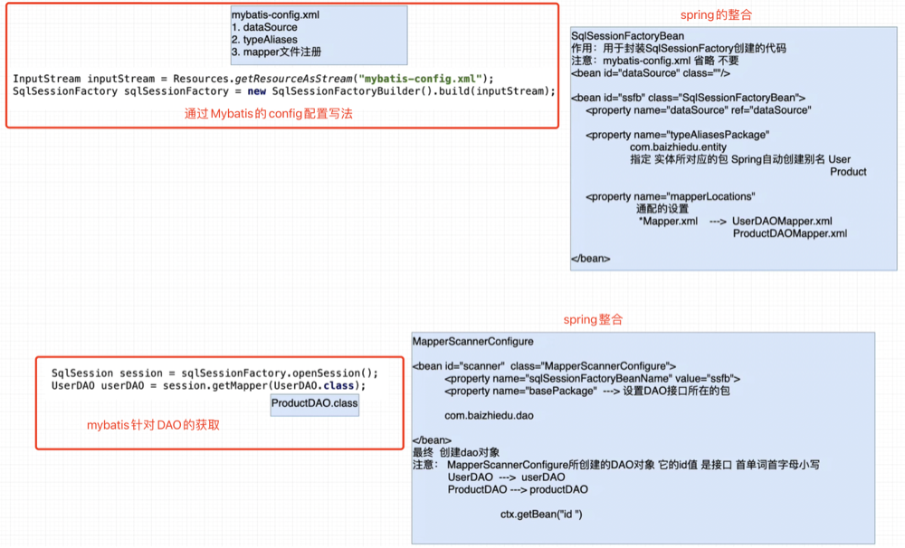

Spring整合Mybatis
1. 回顾Mybatis开发
mybatis开发步骤
1. 实体对象
2. 实体别名
3. 表
4. DAO接口
5. Mapper映射文件
6. 注册Mapper映射文件
7. 调用MybtaisAPI
<?xml version="1.0" encoding="UTF-8"?>
<!DOCTYPE configuration
PUBLIC "-//mybatis.org//DTD Config 3.0//EN"
"http://mybatis.org/dtd/mybatis-3-config.dtd">
<configuration>
<typeAliases>
<typeAlias alias="user" type="org.example.spring.entity.User" />
</typeAliases>
<environments default="mysql">
<environment id="mysql">
<transactionManager type="JDBC"/>
<dataSource type="POOLED">
<property name="driver" value="com.mysql.jdbc.Driver"/>
<property name="url" value="jdbc:mysql://localhost:3306/huanglz?useSSL=false"/>
<property name="username" value="root"/>
<property name="password" value="root"/>
</dataSource>
</environment>
</environments>
<mappers>
<mapper resource="UserDAOMapper.xml"/>
</mappers>
</configuration>
<?xml version="1.0" encoding="UTF-8" ?>
<!DOCTYPE mapper PUBLIC "-//mybatis.org//DTD Mapper 3.0//EN"
"http://mybatis.org/dtd/mybatis-3-mapper.dtd">
<mapper namespace="org.example.spring.dao.UserDAO">
<insert id="save" parameterType="user">
insert into t_user(username,password) values(#{username},#{password});
</insert>
</mapper>
public class TestMybatis {
public static void main(String[] args) throws IOException {
InputStream inputStream = Resources.getResourceAsStream("mybatis-config.xml");
SqlSessionFactory sessionFactory = new SqlSessionFactoryBuilder().build(inputStream);
SqlSession sqlSession = sessionFactory.openSession();
UserDAO userDAO = sqlSession.getMapper(UserDAO.class);
User user = new User();
user.setUsername("xxh");
user.setPassword("123456");
userDAO.save(user);
sqlSession.commit();
}
}
2. Spring整合Mybtais思路分析

3. Spring整合Mybatis步骤
3.1 环境搭建
<properties>
<java.version>1.8</java.version>
<spring-version>5.2.6.RELEASE</spring-version>
<mysql-connector-version>5.1.47</mysql-connector-version>
<spring-jdbc-version>5.2.13.RELEASE</spring-jdbc-version>
<spring-mybatis-version>2.0.6</spring-mybatis-version>
<mybatis-version>3.5.6</mybatis-version>
<druid-version>1.2.6</druid-version>
<aspectjrt-version>1.9.5</aspectjrt-version>
<aspectjweaver-version>1.9.5</aspectjweaver-version>
</properties>
<dependencies>
<dependency>
<groupId>org.springframework</groupId>
<artifactId>spring-context</artifactId>
<version>${spring-version}</version>
</dependency>
<dependency>
<groupId>org.springframework</groupId>
<artifactId>spring-tx</artifactId>
<version>${spring-version}</version>
</dependency>
<dependency>
<groupId>org.springframework</groupId>
<artifactId>spring-aop</artifactId>
<version>${spring-version}</version>
</dependency>
<dependency>
<groupId>org.aspectj</groupId>
<artifactId>aspectjrt</artifactId>
<version>${aspectjrt-version}</version>
</dependency>
<dependency>
<groupId>org.aspectj</groupId>
<artifactId>aspectjweaver</artifactId>
<version>${aspectjweaver-version}</version>
</dependency>
<dependency>
<groupId>mysql</groupId>
<artifactId>mysql-connector-java</artifactId>
<version>${mysql-connector-version}</version>
</dependency>
<dependency>
<groupId>org.springframework</groupId>
<artifactId>spring-jdbc</artifactId>
<version>${spring-jdbc-version}</version>
</dependency>
<dependency>
<groupId>org.mybatis</groupId>
<artifactId>mybatis-spring</artifactId>
<version>${spring-mybatis-version}</version>
</dependency>
<dependency>
<groupId>org.mybatis</groupId>
<artifactId>mybatis</artifactId>
<version>${mybatis-version}</version>
</dependency>
<dependency>
<groupId>com.alibaba</groupId>
<artifactId>druid</artifactId>
<version>${druid-version}</version>
</dependency>
<dependency>
<groupId>junit</groupId>
<artifactId>junit</artifactId>
<version>RELEASE</version>
<scope>test</scope>
</dependency>
<dependency>
<groupId>org.slf4j</groupId>
<artifactId>slf4j-log4j12</artifactId>
<version>1.7.30</version>
</dependency>
<dependency>
<groupId>log4j</groupId>
<artifactId>log4j</artifactId>
<version>1.2.17</version>
</dependency>
</dependencies>
3.2 spring整合mybatis配置文件
<?xml version="1.0" encoding="UTF-8"?>
<beans xmlns="http://www.springframework.org/schema/beans"
xmlns:xsi="http://www.w3.org/2001/XMLSchema-instance"
xsi:schemaLocation="http://www.springframework.org/schema/beans
http://www.springframework.org/schema/beans/spring-beans.xsd">
<bean id="dataSource" class="com.alibaba.druid.pool.DruidDataSource">
<property name="driverClassName" value="com.mysql.jdbc.Driver"/>
<property name="url" value="jdbc:mysql://localhost:3306/huanglz?useSSL=false"/>
<property name="username" value="root"/>
<property name="password" value="root"/>
</bean>
<bean id="sqlSessionFactoryBean" class="org.mybatis.spring.SqlSessionFactoryBean">
<property name="dataSource" ref="dataSource"/>
<property name="typeAliasesPackage" value="org.example.spring.entity"/>
<property name="mapperLocations">
<list>
<value>classpath:org.example.spring.mapper/*Mapper.xml</value>
</list>
</property>
</bean>
<bean id="mapperScanner" class="org.mybatis.spring.mapper.MapperScannerConfigurer">
<property name="sqlSessionFactoryBeanName" value="sqlSessionFactoryBean"/>
<property name="basePackage" value="org.example.spring.dao"/>
</bean>
</beans>
3.3 编码调用
@Test
public void test1(){
ApplicationContext context = new ClassPathXmlApplicationContext("/applicationContext.xml");
UserDAO userDAO = (UserDAO) context.getBean("userDAO");
User user = new User();
user.setUsername("xiaosna");
user.setPassword("99999");
userDAO.save(user);
}
4. spring的事物处理
4.1 什么是事物
保证业务操作完整性(要么一起成功，要么一起失败)的一种数据库机制
事物的特点 ACID
A(Atomic) 原子性: 事务中包含的各项操作必须全部成功执行或者全部不执行。
C(consistent) 一致性: 事务执行的结果必须是使数据库从一个一致性状态变到另一个一致性状态
I(Isolated) 隔离性: 一个事务的执行不与其它事务干扰。即一个事务内部的操作及使用的数据对其它并发事务是隔离的，并发执行的各个事务之间不能互相干扰。
D(Durability) 持久性: 事务处理结束后，对数据的修改就是永久的，即便系统故障也不会丢失
4.2 各框架间事物控制的区别
- JDBC
Connection.setAutoCommit(false); 开启事物并手动控制
Connection.commit(); 提交事物
Connection.rollback(); 事物回滚
- mybatis 自动开启事物
sqlSession.commit(); 提交事物 底层还是对Connection的封装
sqlSession.rollback(); 回滚事物
表面上是针对不同的API进行事物控制，可底层还是Connection
4.3 Spring事物的开发
public interface UserService {
void save(User user);
}
public class UserServiceImpl implements UserService {
private UserDAO userDAO;
public UserDAO getUserDAO() {
return userDAO;
}
public void setUserDAO(UserDAO userDAO) {
this.userDAO = userDAO;
}
@Transactional
@Override
public void save(User user) {
userDAO.save(user);
}
}
<dependency>
<groupId>org.springframework</groupId>
<artifactId>spring-tx</artifactId>
<version>${spring-version}</version>
</dependency>
<bean id="userService" class="org.example.spring.service.UserServiceImpl">
<property name="userDAO" ref="userDAO"/>
</bean>
<bean id="dataSourceTransactionManager" class="org.springframework.jdbc.datasource.DataSourceTransactionManager">
<property name="dataSource" ref="dataSource"/>
</bean>
<tx:annotation-driven transaction-manager="dataSourceTransactionManager"/>
@Test
public void test2(){
ApplicationContext context = new ClassPathXmlApplicationContext("/applicationContext.xml");
UserService userService = (UserService) context.getBean("userService");
User user = new User();
user.setUsername("xwb");
user.setPassword("8888");
userService.save(user);
}
5. Spring中如何添加事物属性
@Transactional(isolation = ,propagation = ,readOnly = ,timeout = ,rollbackFor = ,noRollbackFor = )
6. 事物属性详解 - 隔离属性(isolation)
6.1 隔离属性
1. 脏读
- 一个事务，读取了另一个事务中没有提交的数据。会在本事务中产生数据不一致的问题
- 解决方案 @Transactional(isolation=Isolation.READ_COMMITTED)
2. 不可重复读
- 一个事务中，多次读取相同的数据，但是读取结果不一样。会在本事务中产生数据不一致的问题
- 解决方案 @Transactional(isolation=Isolation.REPEATABLE_READ)
- 本质 行锁
3. 幻读
- 一个事务中，多次对整表进行查询统计，但是结果不一样，会在本事务中产生数据不一致的问题
- 解决方案 @Transactional(isolation=Isolation.SERIALIZABLE)
- 本质 表锁
并发安全 SERIALIZABLE > REPEATABLE_READ > READ_COMMITTED
运行效率 READ_COMMITTED > REPEATABLE_READ > SERIALIZABLE
6.2 数据库对于隔离属性的支持
| 隔离属性 |
MySql |
Oracle |
| ISOLATION_READ_COMMITTED(读已提交) |
Y |
Y |
| IOSLATION_REPEATABLE_READ(可重复读) |
Y |
N |
| ISOLATION_SERIALIZABLE(窜行化) |
Y |
Y |
6.3 默认的隔离属性
spring在不指定隔离属性时默认会使用ISOLATION_DEFAULT，而ISOLATION_DEFAULT 则会调用不同数据库所设置的默认隔离属性
MySql默认隔离属性REPEATABLE_READ
Oracle默认隔离属性READ_COMMITTED
mysql 查看默认隔离属性
高版本命令 select @@transaction_isolation;
低版本命令 select @@tx_isolation;
Oracle 查看默认隔离属性
SELECT s.sid,s.serial#,
CASE BITAND(t.flag,POWER(2,28))
WHEN 0 THEN 'READ COMMITTED'
ELSE 'SERIALIZABLE'
END AS isolation_level
FROM v$transaction t
JOIN v$session s ON t.addr = s.taddr
AND s.sid = sys_context('USERENV','SID');
7. 事物属性详解 - 传播属性(propagation)
7.1 概念
1. 描述了事物解决嵌套问题的特征
2. 什么叫事物的嵌套？
- 指的是一个大的事物中包含了若干个小事物
3. 如果出现了事物嵌套会出现什么问题？
- 大事物中包含多个小事物，如某个小事物发生异常那么前面已提交的事物就不能进行回滚，那么此时就会造成数据的原子性与一致性问题
4. 如何解决事物嵌套的问题？
- 利用事物传播属性
7.2 传播属性的值及用法
required 是传播属性的默认值
| 属性值 |
外部不存在事物 |
外部存在事物 |
用法 |
应用 |
| REQUIRED |
开启新的事务 |
融合到外部事务中 |
@Transactional(propagation=Propagation.REQUIRED) |
增删改操作 |
| SUPPORTS |
不开启新的事务 |
融合到外部事务中 |
@Transactional(propagation=Propagation.SUPPORTS) |
查询方法 |
| REQUIRES_NEW |
开启新的事务 |
挂起外部事务，创建新的事务 |
@Transactional(propagation=Propagation.REQUIRES_NEW) |
日志记录方法 |
| NOT_SUPPORTED |
不开启新的事务 |
挂起外部事务 |
@Transactional(propagation=Propagation.NOT_SUPPORTED) |
及其不常用 |
| NEVER |
不开启新的事务 |
抛出异常 |
@Transactional(propagation=Propagation.NEVER) |
及其不常用 |
| MANDATORY |
抛出异常 |
融合到外部事务中 |
@Transactional(propagation=Propagation.MANDATORY) |
及其不常用 |
8. 事物属性详解 - 只读属性(readOnly)
针对与只进行查询操作的业务方法，加入只读属性，可提高效率
不过一般来说针对查询的方法都不会去加上事物
9. 事物属性详解 - 超时属性(timeout)
1. 指定了事物等待的最长时间(秒为单位)
当事物访问数据库时，又肯呢个访问的数据被别的事物进行加锁的处理，那么此时本事物就必须进行等待
2. 应用
@Transactional(timeout=2) 表示当前事物等待时间为2秒，超出2秒则抛出异常
3. 超时属性的默认值(-1)
最终由对应的数据库来指定
10. 事物属性详解 - 异常属性
Spring事物处理过程中
默认对于运行时异常和error默认是回滚，其余都是提交，例如RuntimeException则是回滚，而Exception则是提交
rollbackFor={java.lang.Exception,xxx,xxx)
noRollbackFor={java.lang.RuntimeException,xxx,xx)
@Transactional(rollbackFor={java.lang.Exception.class),noRollbackFor=(java.lang.RuntimeException.class))
11. 事物属性配置总结
1. 隔离属性 配置默认值即可
2. 传播属性 配置required(默认)增删改
3. 只读属性 配置readOnly false(默认)增删改
4. 超时属性 默认值
5. 异常属性 默认值
增删改操作 @Transactionnal
查询操作 @Transactionnal(propagation=Propagation.SUPPORTS,readOnly=true)
12. 基于标签的事物方式
<?xml version="1.0" encoding="UTF-8"?>
<beans xmlns="http://www.springframework.org/schema/beans"
xmlns:xsi="http://www.w3.org/2001/XMLSchema-instance" xmlns:tx="http://www.springframework.org/schema/tx"
xmlns:aop="http://www.springframework.org/schema/aop"
xsi:schemaLocation="http://www.springframework.org/schema/beans
http://www.springframework.org/schema/beans/spring-beans.xsd http://www.springframework.org/schema/tx http://www.springframework.org/schema/tx/spring-tx.xsd http://www.springframework.org/schema/aop https://www.springframework.org/schema/aop/spring-aop.xsd">
<bean id="dataSource" class="com.alibaba.druid.pool.DruidDataSource">
<property name="driverClassName" value="com.mysql.jdbc.Driver"/>
<property name="url" value="jdbc:mysql://localhost:3306/huanglz?useSSL=false"/>
<property name="username" value="root"/>
<property name="password" value="root"/>
</bean>
<bean id="sqlSessionFactoryBean" class="org.mybatis.spring.SqlSessionFactoryBean">
<property name="dataSource" ref="dataSource"/>
<property name="typeAliasesPackage" value="org.example.spring.entity"/>
<property name="mapperLocations">
<list>
<value>classpath:mapper/*Mapper.xml</value>
</list>
</property>
</bean>
<bean id="mapperScanner" class="org.mybatis.spring.mapper.MapperScannerConfigurer">
<property name="sqlSessionFactoryBeanName" value="sqlSessionFactoryBean"/>
<property name="basePackage" value="org.example.spring.dao"/>
</bean>
<bean id="userService" class="org.example.spring.service.UserServiceImpl">
<property name="userDAO" ref="userDAO"/>
</bean>
<bean id="dataSourceTransactionManager" class="org.springframework.jdbc.datasource.DataSourceTransactionManager">
<property name="dataSource" ref="dataSource"/>
</bean>
<tx:advice id="txAdvice" transaction-manager="dataSourceTransactionManager">
<tx:attributes>
<tx:method name="save"/>
<tx:method name="modify*"/>
<tx:method name="*" propagation="SUPPORTS" read-only="true"/>
</tx:attributes>
</tx:advice>
<aop:config>
<aop:pointcut id="pc" expression="execution(* org.example.spring.service..*.*(..))"/>
<aop:advisor advice-ref="txAdvice" pointcut-ref="pc"/>
</aop:config>
</beans>
13. Spring纯注解整合Mybtais
@Configuration
@ComponentScan("org.example.annotation.mybatis")
@MapperScan(basePackages = "org.example.annotation.mybatis")
@EnableTransactionManagement
public class MybatisConfiguration {
@Bean
public DataSource dataSource() {
DruidDataSource dataSource = new DruidDataSource();
dataSource.setDriverClassName("com.mysql.jdbc.Driver");
dataSource.setUrl("jdbc:mysql://localhost:3306/huanglz?useSSL=false");
dataSource.setUsername("root");
dataSource.setPassword("root");
return dataSource;
}
@Bean
public SqlSessionFactoryBean sqlSessionFactoryBean(DataSource dataSource) {
SqlSessionFactoryBean sqlSessionFactoryBean = new SqlSessionFactoryBean();
sqlSessionFactoryBean.setDataSource(dataSource);
sqlSessionFactoryBean.setTypeAliasesPackage("org.example.annotation.entity");
ResourcePatternResolver resolver = new PathMatchingResourcePatternResolver();
Resource[] resources = new Resource[0];
try {
resources = resolver.getResources("mapper/*Mapper.xml");
} catch (IOException e) {
e.printStackTrace();
}
sqlSessionFactoryBean.setMapperLocations(resources);
return sqlSessionFactoryBean;
}
@Bean
public DataSourceTransactionManager dataSourceTransactionManager(DataSource dataSource){
DataSourceTransactionManager dataSourceTransactionManager = new DataSourceTransactionManager();
dataSourceTransactionManager.setDataSource(dataSource);
return dataSourceTransactionManager;
}
}